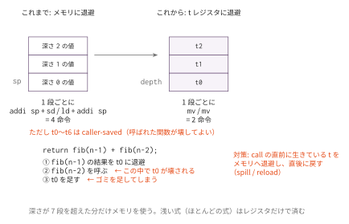

レジスタ割り当て入門 — スタックマシンを卒業する
今日のゴール
式の途中結果の退避先を、メモリから t レジスタに変える。
fixed17 を全通させたまま、生成命令数をさらに減らす。
この回の位置づけ
| 項目 | 内容 |
|---|---|
| 必須の前提 | 着手はコマ6（関数呼び出し）まで。完了条件のうち golden.py は完成した final/mycc.py を土台に fixed17 を回すので、やり切るにはコマ15 も要る |
| 推奨の前提 | — |
| 改変しない | mycc.py、scaffold/、ラッパー regcc.py（配布済み・完成品） |
| 編集する | regstack.py |
| 完了条件 | check.py の全 Step が PASS になり、golden.py が fixed17 全通と命令数の削減を報告する |
| コマ数 | 1 |
| 備考 | 最適化入門発展シリーズの第2回。B1 とは独立している。O4（レジスタ割り当て）の前哨にあたる |
この回と O4 の関係。 名前は同じ「レジスタ割り当て」だが、レジスタに載せる対象が違う。
| 載せるもの | 使うレジスタ | 差し込み方 | |
|---|---|---|---|
| この回（B2） | 式の途中結果（push/pop の中身） | t0〜t6（caller-saved） |
コード生成器のメソッド差し替え |
| O4 | 局所変数（int x; の実体） |
s1〜s11（callee-saved） |
コード生成器のパッチ |
別の無駄を消しているので、両方かけても効果はほとんど重ならない （O4 の発展課題5 が、実際に両方かけて確かめる課題である）。
どちらを先にやるか。
着手が軽いのはこちら（コマ6 まで。ただし golden.py まで通すにはコマ15 が要る）。コマ15 が終わっているなら、
O1 → O4 の順に進んで「測ってから直す」流れを体験したほうが得るものが大きい。
この回の発展課題3（s レジスタ版）は、そのまま O4 の主題である。
いまのコンパイラは「スタックマシン」
コマ2 以来、二項演算はこう生成されてきた。
# 左辺を計算して a0 へ
addi sp, sp, -8
sd a0, 0(sp) ← メモリへ退避
# 右辺を計算して a0 へ
ld a1, 0(sp) ← メモリから復元
addi sp, sp, 8
add a0, a1, a0この方式は単純で常に正しいという大きな長所がある。 式がどれだけ深くネストしても、スタックが深くなるだけで破綻しない。 だからこそ講義の最初に採用した。
しかし、退避1段につき4命令、しかもメモリアクセスが2回入る。 レジスタは32本もあるのに、ほとんど使っていない。

t0〜t6 を「深さ0の値は t0、深さ1の値は t1、…」と割り当てれば、
退避は mv 1命令、復元も mv 1命令で済む。4命令が2命令になる。
depth — 何段目かはコンパイル時に分かる
鍵になるのは、push と pop が必ず対になっていることである。
codegen は式を再帰的にたどるので、退避の深さはコンパイル時に静的に決まる。
(a + b) * (c + d)
深さ0: (a+b) の結果を退避 → t0
深さ1: c の結果を退避 → t1 ← (c+d) を計算中
深さ1: t1 を復元して c+d
深さ0: t0 を復元して掛け算そこで、コード生成器に depth（いま何段退避しているか）を持たせ、
push_a0 で1増やし、pop_into で1減らす。
depth 段目の値は REGS[depth] に置く、と決めればよい。
レジスタが尽きたら（8段以上ネストしたら）、これまで通りメモリへ退避する。 浅い式はレジスタ、深い式はメモリという使い分けである。 実際のプログラムでは、式が8段もネストすることはめったにない。
落とし穴: t レジスタは call で壊れる
RV64 の呼び出し規約では、t0〜t6 は caller-saved（一時レジスタ）である。
つまり「呼ばれた関数は自由に壊してよい。必要なら呼ぶ側が守れ」という約束になっている。
return fib(n - 1) + fib(n - 2);fib(n-1) の結果を t0 に退避してから fib(n-2) を呼ぶと、
その中の fib が同じ t0 を退避に使うので、値が壊れる。
コマ6 の資料で「callee-saved / caller-saved」を
「この回では基本だけ扱う」と先送りにした話が、ここで効いてくる。
対策は素直に、call の直前に生きている t レジスタをメモリへ退避し、直後に戻す
（spill / reload）。呼び出しがない式ではこの退避は発生しないので、
ほとんどの式は mv だけで済む。
なぜ s レジスタ（callee-saved）を使わないのか。
s1〜s11 を使えば呼び出しをまたいでも壊れない。ただしその場合は、
自分の関数のプロローグで s レジスタを保存し、エピローグで戻す義務が生じる
（自分も「呼ばれた関数」だから）。フレームサイズの計算も変わる。
「呼び出しの周りだけ退避する」方が、コマ3・コマ6 で作ったフレーム生成に手を入れずに済む。
どちらが得かはプログラム次第で、本物のコンパイラは
「呼び出しをまたぐ値は s、またがない値は t」と使い分けている。
実装
| Step | 実装対象 | 内容 |
|---|---|---|
| 1 | push_a0 / pop_into |
depth に応じて レジスタ / メモリ |
| 2 | spill_before_call / reload_after_call |
call をまたぐ t の退避 |
関数は cg（コード生成器のインスタンス）を受け取り、
cg.emit(行) で命令を出し、cg.depth を読み書きする。
sp の整列に注意
メモリ退避に落ちたときは、8 バイトではなく 16 バイト単位で sp を動かす。
8 バイト単位だと、退避が奇数段のときに sp が16バイト境界からずれ、
その状態で call すると ABI 違反になる（コマ6 のアラインメント問題の再来）。
spill も同じ理由で、16 の倍数に切り上げて確保する。
動かし方
python3 regcc.py ../../final/tests/f09_recur.c
python3 regcc.py ../../final/tests/f09_recur.c | python3 ../count_insns.pyregcc.py は mycc.py の _push_a0 / _pop_into / _gen_call を
自分の regstack.py の実装に差し替えて実行する
（_gen_call は引数の受け渡しに push/pop を使うので、あわせて差し替えている）。
テスト
python3 check.py # Step ごとの単体テスト(未実装は SKIP)
python3 golden.py # fixed17 全通 + 命令数の before/aftercheck.py は emit と depth だけを持つ「コード生成器もどき」に対して
関数を呼び、出力される行を直接確かめる。
全テスト PASS かつ命令数が減っていることが完了条件である。 教員の実装では合計 1250 → 1007 命令（約19%減）になる。
テストが落ちたら、まず次の3点を疑う。
push_a0とpop_intoでdepthの増減が対称か（depthを減らす前に読んでいないか）callをまたぐ t レジスタを退避しているか（再帰のテストで露見する）- メモリ退避で
spの増減が一致しているか（-16したなら+16で戻す）
発展課題
- B1 と組み合わせる: ピープホールの「push/li/pop 圧縮」規則は、
レジスタ版では別のパターン（
mv t0, a0+li a0, C）になっている。 新しい規則を書いて、さらに減らせるか試す - 使うレジスタを減らしてみる:
REGSを['t0']だけにすると何が起きるか。 命令数とテスト結果を確認し、レジスタ数と性能の関係を体感する - s レジスタ版: 呼び出しをまたぐ値だけ
s1〜s11に置く方式を設計する。 プロローグ/エピローグで何を保存する必要があるか。 これは O4 の主題そのものである。 設計を考えたら O4 の答え合わせをしてほしい - 動的命令数を測る: 上の「19%減」は静的命令数の話である。
実際に実行された命令の回数は O1 の方法で数える
（
qemu-riscv64 -one-insn-per-tb -d exec,nochainで実行を追い、nmで引いた自作関数のアドレス範囲だけに絞る）。-d in_asmでは数えられない。 あれは qemu が翻訳したブロックを翻訳時に1度だけ 表示するものなので、行数を数えても「実行された回数」にはならない （ループの回数を2倍にしても行数はほとんど変わらない）
コラム: これは「レジスタ割り当て」なのか。 本物のレジスタ割り当ては、変数の生存区間（live range）を求め、 干渉グラフを彩色して「どの変数をどのレジスタに置くか」を決める、 コンパイラ最適化の花形である。 この回でやったのは、式の途中結果に深さの順で機械的にレジスタを割り当てる 簡易版で、ローカル変数はスタックに置いたままである。 それでも2割減る。次の一歩は「ループ内で何度も読む変数をレジスタに載せる」ことで、 そこからが本当の割り当て問題になる。 その一歩を踏み出すのが O4（局所変数を callee-saved レジスタへ）で、 干渉グラフの材料になる生存区間を求めるのが O5（生存変数解析）である。